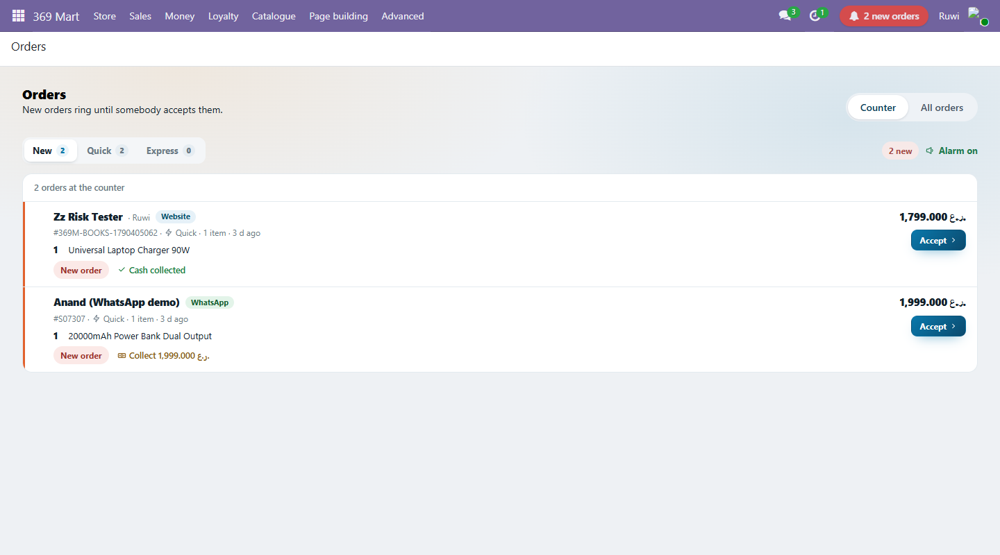
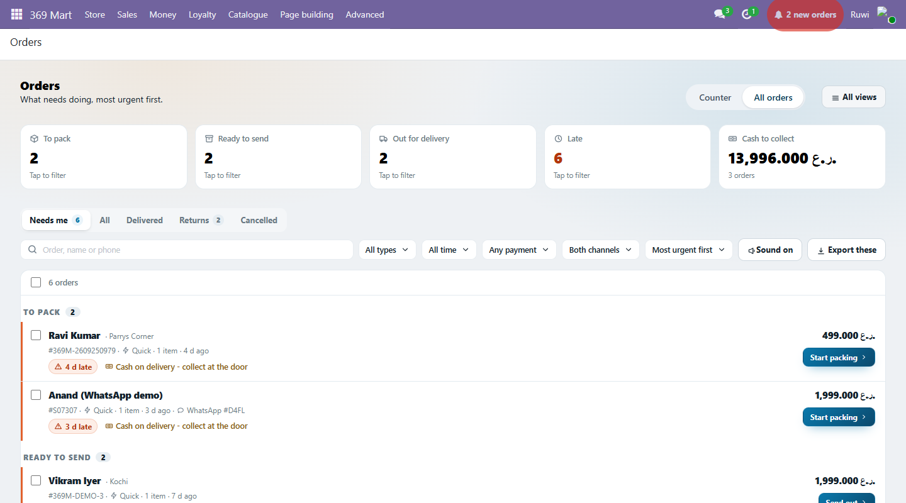
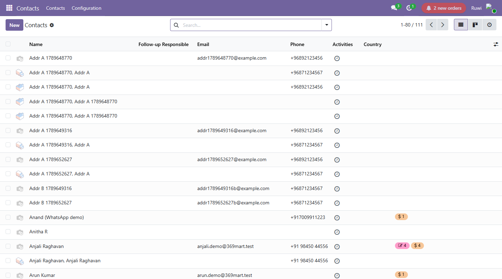
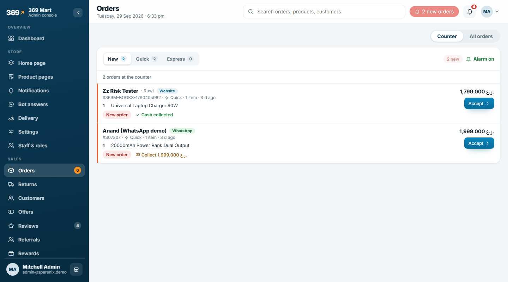
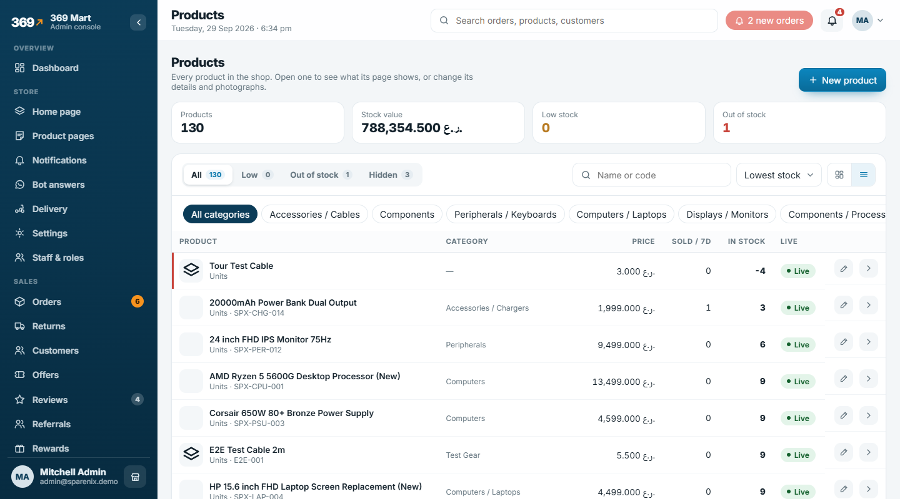

369 Mart New Orders Board puts a shop Counter in front of your orders. Once it is installed, 369 Mart → Sales → Orders opens the Counter first: a short list of the orders the shop is working on right now, with New, Quick and Express tabs. Each row says what was ordered, how it is paid and what to press next. A switch at the top takes you to All orders (the full Orders desk) and back.
A new order sets off an alarm that keeps ringing until somebody presses Accept. It rings on any backend screen, not only the Counter, and there is no off switch — the only way to quiet it is to accept the waiting orders.
| Word | What it means |
|---|---|
| Counter | This module's screen: the orders the shop must accept, pack or hand to a rider right now. |
| All orders | The full Orders desk from 369 Mart Orders: every order, with filters, tiles and history. |
| Accept | Saying “we have it”. This is what stops the alarm. Packing is a separate step. |
| Quick / Express | Quick is same-day delivery from stock the shop holds. Express lands on a later day, usually because something has to come in from a supplier. |
| Collect | The order is not paid yet. The rider takes this amount at the door. |
| Pickup code | A short code shown on the row once a rider is on the way. You read it out to the rider when they collect the parcel. |
| Supplier stock | Goods the shop is buying in because no shelf had them. The order waits until you press Goods arrived. |
Part 1 – Setting Up shows where the Counter lives and how to set the alarm's ring and pause. Part 2 – Everyday Use walks through the Counter, each button, the switch to All orders, the alarm on other screens and the same Counter on the staff console. Part 3 – Keeping It Secure & In Order covers who can do what and what happens if the module is removed.
Done once by an administrator. If the Orders menu opens the Counter and the ring length suits you, skip to Part 2.
Open 369 Mart from the main menu. This module changes one entry and adds two things that show on every screen:
The alarm's timing is set in another app: Delivery → Configuration → Delivery Settings (step 2).
Open Delivery → Configuration → Delivery Settings and find the section The Shop Counter. The alarm rings for a while, rests, then rings again, until every new order is accepted.
Anything below 3 seconds is treated as 3. A change reaches every open screen at its next check, within about 10 seconds; nobody needs to reload.
This is what counter staff use all day.
Open 369 Mart → Sales → Orders. The heading reads “New orders ring until somebody accepts them.” The list updates by itself the moment an order arrives or changes; you never need to reload.

| On the screen | What it does |
|---|---|
| Counter / All orders | The switch between this screen and the full Orders desk (step 4). |
| Tabs | New — orders waiting for Accept. Quick and Express — every open order of that kind, at any stage. Each tab shows its count. The Counter opens on New. |
| N new | A red pill with the number of orders waiting for Accept. It pulses while it is not zero. |
| All shops | Shown only when more than one shop is set up. Pick a shop to see only its orders, or All shops for everything. |
| Turn on the alarm / Alarm on | See step 5. Once the sound is on, the button turns into a green Alarm on label. |
When a tab is empty you see “No new orders. They appear here on their own, with the alarm.” (New) or “Nothing open for Quick delivery right now.” (Quick or Express).
Each row is one order. From top to bottom:
On the right are the order total and the buttons for its stage. Click anywhere else on the row to open that order in All orders, with the order already open.
| Button | Shown when | What happens |
|---|---|---|
| Accept | New order | Asks which company's stock the order comes from (below). The order moves to Packing, the alarm stops for it, and the customer is told the order is approved and being packed. |
| Packed - call the rider | Packing | The customer is told it is packed and a rider is called. If no rider is set on the order, it leaves the Counter to be handed out by hand in the Delivery app. |
| Put back | Packing | Returns the order to New order — accepted by mistake, or handed to someone else. The alarm rings for it again. |
| Goods arrived | Waiting for supplier stock | The bought-in goods are here. The order joins the normal queue and Packed - call the rider appears. |
| Cancel order | While the order can still be cancelled | Asks first (below), then cancels it without leaving the Counter. |
Which stock? Accept opens “Accept #… - from which company?”. Each company is listed with how many of each item it has and needs; only a company with every item on its shelf can be picked, and the one the order is booked to now is marked booked here now. If no company has the goods, press No stock anywhere - order from supplier. In that box you tick suppliers and press Ask these suppliers (they get a price request on WhatsApp), then type What do we pay?, optionally Which supplier?, and When will it be here?, and press Accept and order it in. The order is accepted and shows Waiting for supplier stock until you press Goods arrived.
Cancelling. Cancel order asks “Cancel order #…?” and warns that the customer and the rider are told straight away. If the invoice is already paid, it adds that the refund is done from the Delivery form afterwards. Press Cancel the order, or Keep it to back out.
Press All orders at the top right to open the full Orders desk in place of the Counter. The desk has the same switch: press Counter to come back. Use All orders for searching, filters, delivered and cancelled orders, and everything else described in the 369 Mart Orders manual.

The alarm is not tied to the Counter. Anyone with Salesperson or Website designer rights hears it on every backend screen, and it checks for waiting orders every 10 seconds (a brand-new order is usually heard at once). It rings for the Ring For time, rests for the Alarm Repeats Every time, and repeats until the last waiting order is accepted.

The staff console's Orders screen has the same Counter / All orders switch, the same tabs, rows and buttons, Cancel included. It reads the same orders: an order accepted on the console is accepted in the backend, and the other way round. The red N new orders pill also shows on every console page.


| Role | What they can do |
|---|---|
| Salesperson | Sees Sales → Orders, works the Counter (Accept, Packed, Put back, Goods arrived, Cancel) and hears the alarm everywhere. |
| Website designer | Hears the alarm and sees the pill on every screen, and can use the Counter on the staff console. |
| Delivery Manager (Delivery app) | Changes the ring and pause in Delivery Settings. |
| Internal user | No Orders menu, no Counter and no alarm. Give Salesperson rights to work the Counter. |
Buttons on the Counter send messages through the Store app: the customer hears when an order is accepted and when it is packed, and the customer and rider are both told about a cancellation.
Uninstalling 369 Mart: New Orders Board puts the old Sales → Orders entry back exactly as it was, opening the Orders desk directly. The pill, the notice and the app-wide alarm go away with it. No orders are changed.
| Stage | Meaning | How to change it |
|---|---|---|
| New order | Paid or cash order waiting for the shop. The alarm rings. | Accept, or Cancel order. |
| Packing | Accepted; being packed. May also say Waiting for supplier stock. | Packed - call the rider, Put back, or Goods arrived first if waiting for stock. |
| Waiting for the rider | Packed; a rider is still to be found. | Moves on by itself when a rider is called. |
| Rider called | A rider has been asked to collect it. | Moves on when the rider accepts. |
| Rider on the way | The rider is coming; the pickup code is on the row. | Read the code to the rider. The order leaves the Counter once collected. |
| What you see | What to do |
|---|---|
| The pill shows but there is no sound | Click anywhere or press Turn on the alarm on the Counter. Check the browser tab is not muted and the volume is up. |
| No alarm on any screen | Check the user has Salesperson or Website designer rights, and that Shop Confirms Orders is on in Delivery Settings. |
| The alarm went quiet but orders are still new | The screen could not reach the server three times in a row, so it stopped rather than ring on old news. It keeps trying and rings again as soon as the server answers. Reload the page if it stays quiet. |
| No sound while the Store app is open | Expected: the Store app's New Orders screen rings on its own. Close it or use that screen's sound. |
| An order is missing from the Counter | Check the All shops selector, then the tab. Orders that are out for delivery, delivered or cancelled are only in All orders. |
| Accept will not let me pick a company | No company has every item in stock. Press No stock anywhere - order from supplier. |
| Rows show no total or tags | The server was not restarted after this module was updated. Ask your administrator to restart it. |
| Orders opens the old desk, not the Counter | This module is not installed, or was removed, so the menu opens the Orders desk directly. Ask your administrator to install it if you want the Counter. |